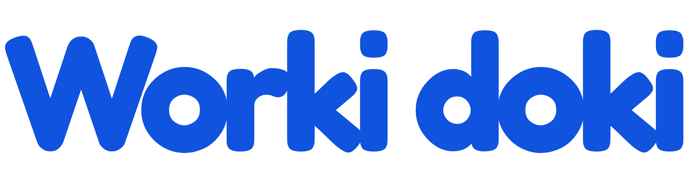

봇 토큰 & 초대 URL 받는 법
관리자 콘솔에 입력하는 두 가지 — 각각 어디서 얻는지 안내합니다.
🔑 1부 · 봇 토큰 (BotFather에서 발급)
토큰은 봇의 비밀번호입니다. 봇은 하나만 만들어 모든 그룹챗에서 재사용합니다.
- 텔레그램에서 @BotFather (파란 인증마크가 있는 계정)를 검색해 대화를 엽니다.
/newbot 을 보냅니다. 표시 이름(예: "Workidoki HRM")을 정하고, bot 으로 끝나는 유저네임(예: emirard_hrm_bot)을 입력합니다.- BotFather가
123456789:AAH...xyz 형태의 토큰을 줍니다. 복사해서 Bot token 칸(또는 .env)에 넣습니다.
/setprivacy → 봇 선택 → Disable. 그래야 봇이 그룹의 일반 메시지를 읽습니다(작업 추적에 필수).- 각 그룹에 봇을 멤버로 추가한 뒤 관리자(Admin)로 승격합니다.
⚠️ 토큰은 비밀로 관리하세요. 토큰을 가진 사람은 봇을 제어할 수 있습니다. 유출되면 BotFather에 /revoke 를 보내 새 토큰을 발급받으세요.
🔗 2부 · 그룹 초대 URL
선택 항목 — 그룹 공유 링크입니다. 봇을 추가하면 chat_id는 자동으로 채워집니다.
- 등록하려는 텔레그램 그룹을 엽니다.
- 상단의 그룹 이름을 눌러 그룹 정보/설정으로 들어갑니다.
- 멤버 추가 → 링크로 초대(모바일), 또는 편집 → 초대 링크(데스크톱)를 선택합니다.
- 링크를 복사합니다 —
https://t.me/+AbC123... 형태입니다. Invite URL 칸에 붙여넣습니다.
📱 모바일: 그룹 이름 → 멤버 추가 → 링크로 초대
💻 데스크톱: 그룹 이름 → 편집 → 초대 링크
💡 링크가 없어도 됩니다. 그룹 안에서 /addgroup 만 실행하면 봇이 자동 등록하고 chat_id 까지 받아옵니다.